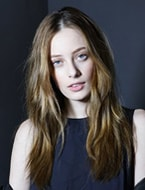
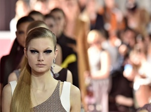

10 beauty-образов с подиума, пригодных для реальной жизни
Макияж и прически нового сезона, в которые влюбилась вся редакция Marie
Claire, на деле оказалось просто повторить и легко носить.
Balmain

Нам кажется, что так выглядят феи или девушки, ведущие правильный образ жизни.
Воссоздать божественный образ можно с помощью увлажняющего средства и BB крема, нанесенных друг за
другом; розового блеска, которым обязательно касается губ кончик пальца; и карандаша шоколадного
оттенка, которым вы ненавязчиво прорисуете брови. Волосы достаточно сбрызнуть средством blow dry,
высушить феном головой вниз и в финале слегка сгладить по всей длине сывороткой для блеска.
Dior

Футуристический дуэт из теней в виде крыла бабочки и идеального конского
хвоста. Для большего захвата площади и четкой границы, тени наносятся спонжем – обязательно влажным,
чтобы придать цвету большей интенсивности. На голове создайте косой пробор, соберите волосы в хвост,
закрепите эластичной резинкой, перебросив через плечо, и зафиксируйте лаком с глянцевым блеском
Dolce&Gabbana
Невероятно женственный, элегантный, но в то же время универсальный образ на
каждый день. Главное научиться рисовать черные стрелки жидкой подводкой – тонкие и немного вздернутые у
виска. Также не обойтись без бесцветного геля для бровей, компактных румян розового цвета и красной
помады.
Max Mara
Мы уверены, что именно так выглядела Мэрилин Монро в 50-е годы на пляже.
Повторить образ можно с помощью бронзирующей пудры, прозрачных теней цвета какао, темных стрелок,
нарисованных мягким карандашом, и помадой розово-бежевого оттенка. Прежде, чем собирать волосы в
незамысловатую прическу, избирательно накрутите пряди на шипцы среднего размера и сбрызните спреем с
морской водой.
Holly Fulton
Кейт Мосс в 90-е годы: юная, сияющая и очень свойская. Цвета пасхальных яиц в
пастельной версии на глазах могут быть очень «девочковыми», это правда, но если добавить тщательную
растушевку, металлическую подводку по контуру века и помаду цвета розовой пудры, то образ становится
неприлично роскошным.
Ermanno Scervino
Темные оттенки для губ стоит лишь попробовать - и вас будет не остановить.
Чтобы не свалиться в вампирскую тематику, следуйте этим правилам: чем глубже цвет, тем лучше; ухоженные
выразительные брови; бежевые тени, чтобы выделить глаза и никакой туши; едва заметный румянец.